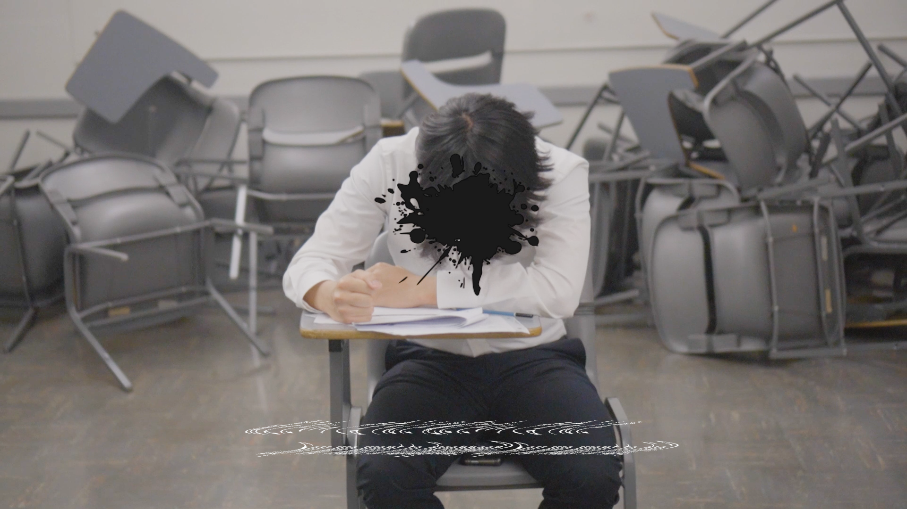
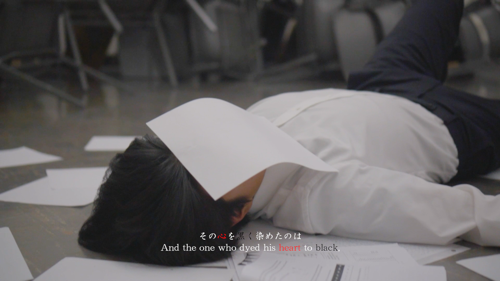
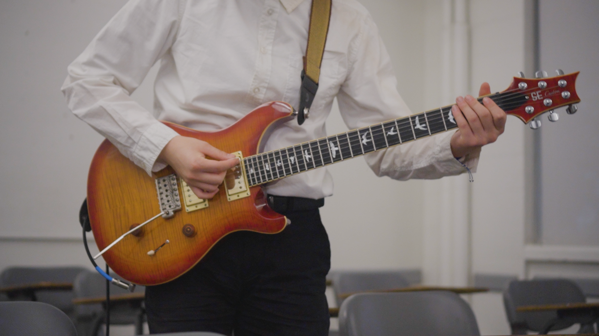
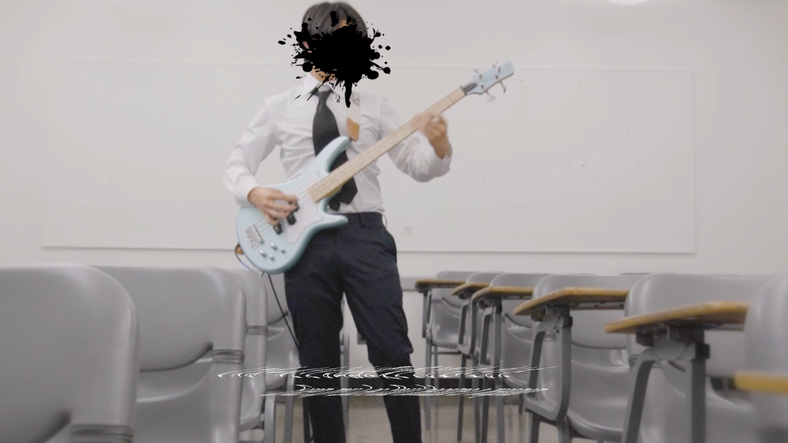

lost ones weeping guitar & bass cover + original mv (video)‧₊˚✩彡




[play video]I collaborated with two artists, soko and y1, to create a music video for the song “Lost One’s Weeping” by Neru, while also covering the song on guitar and bass.
-
the original song follows a young boy that experiences heavy societal pressures, particularly in academics. The boy voices those frustrations in the song, and the lyrics are quite graphic and even mentions suicide. On top of intense thematic messages, the song is also an iconic rock song that contains many incredible instrument parts, which inspired me to cover the song. Although the original music video has eye-catching visual elements, I hoped to expand upon it to create a live action music video that also incorporated instrument playing to show off the song’s musicality.
-
While I recorded the audio and video for the project, it would not be complete without my two amazing collaborators. soko played bass but also acted as the protagonist in the music video, while assisting me with filming the video. Additionally, y1, with his video effects and editing expertise, edited the recorded footage together and added stunning visual effects. Finally, I added subtitles for both the original Japanese and translated English lyrics in hopes to increase accessibility. I hope that this collaborative artwork highlights the appeal and themes of the original song as a homage.
-
m4xkh x soko x y1 music video 2023